Phase 1 — Initial Validation & Environment Awareness
1. Ubuntu Server Login
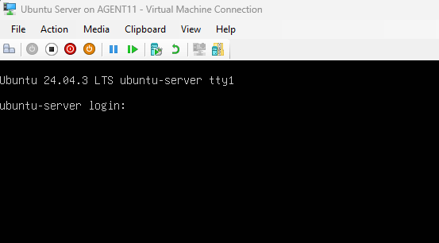
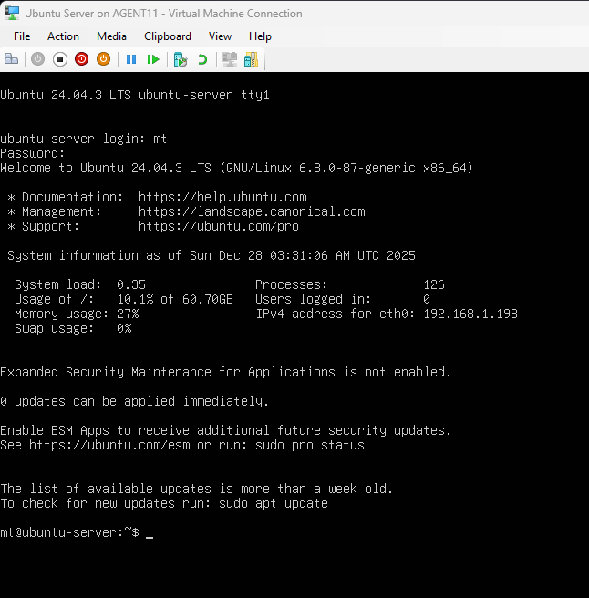
After successful authentication, the system loads directly into a user shell. Root access can be obtained using sudo.
When you download the official Ubuntu Server ISO and install it, you get a headless system by default. A headless system is one where there is no GUI (Graphical User Interface) to log in to — it's all done in the Linux terminal via command-line shell.
However, even though the system is headless by default, that doesn't mean you're "locked out" of the GUI. If a specific task is too difficult in the terminal, you can run sudo apt install ubuntu-desktop, which will download about 2 GB of data and convert the server into a desktop environment. However, it's best practice to avoid this because it results in the server becoming slower and less secure.
When it comes to Linux server administration, the ability to effectively and efficiently manage an Ubuntu Server system via terminal is widely considered one of the most imperative skills in Linux server administration.
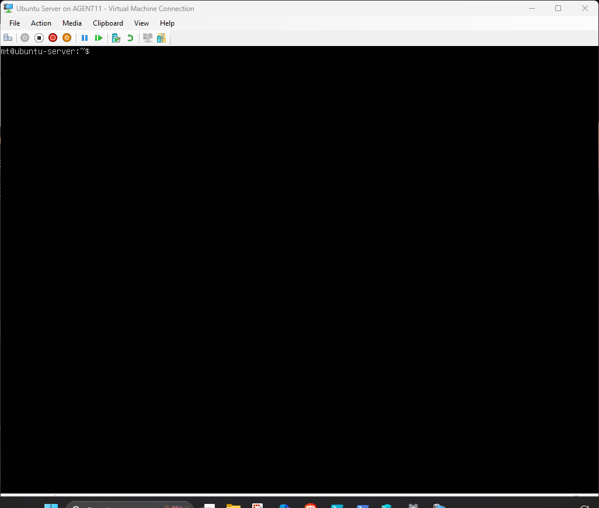
2. Verify OS, Kernel, and System Health
Before proceeding with system configuration, there are some critical verifications to review — these can be huge time savers. These commands are the "vital signs" to check on an Ubuntu Server post OS installation. They help confirm that the hardware and software components are functioning as expected before continuing to configure the system further.
Starting with commands like hostname, whoami, and pwd to get an overall feel for the environment, then proceeding to:
lsb_release -a && uname -auptimedf -hfree -h
System "Identity Check" — lsb_release -a && uname -a: Verify exactly which version of Ubuntu and which Linux Kernel were installed. If you intended to install an LTS version like 24.04 but accidentally installed an interim version, you want to know before spending hours configuring it. It also confirms whether you're running a 64-bit or ARM-based system.
System "Stability Check" — uptime: This tells you how long the server has been running and the load average. It confirms the system didn't experience a silent crash or reboot during the final stages of installation. If the load average is high on a brand-new install, something is going on with background processes.
System "Storage Check" — df -h: Shows disk partitions and how much space is used. A common issue during Ubuntu installations is the "LVM" default, which can sometimes only allocate half of the drive space. Running this ensures the server actually sees all the storage you gave it. The -h flag makes output human-readable (showing GB instead of raw blocks).
System "Memory Check" — free -h: Displays system RAM usage and swap space. You want to make sure the server is detecting all the RAM allocated. If the server is already using 90% of its RAM with nothing installed, that's a sign an upgrade is needed well before the deployment stage.
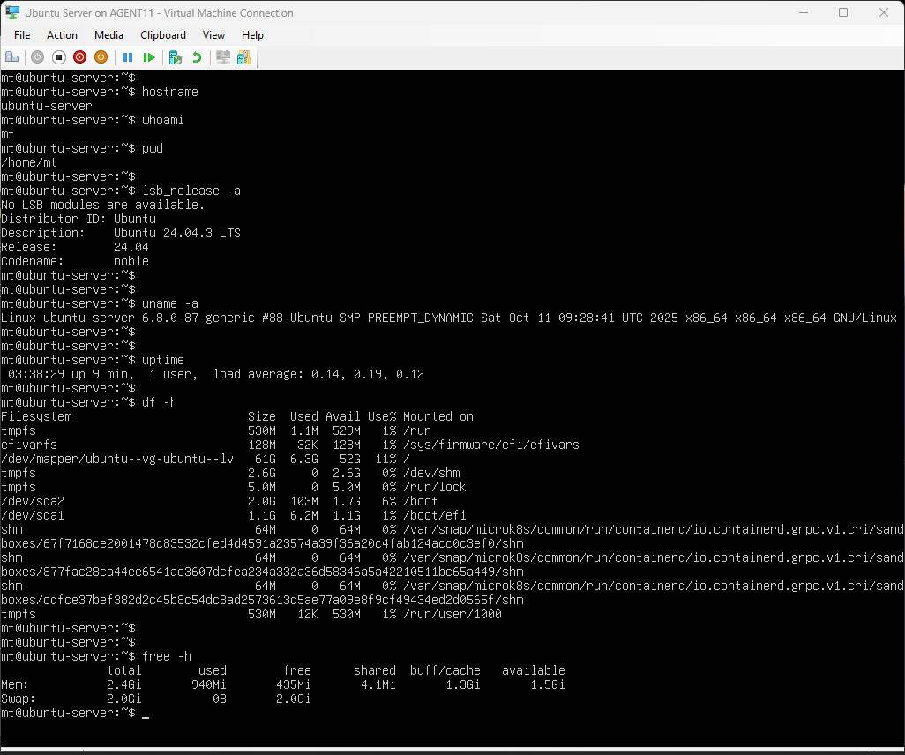
3. Update the System (Mandatory First Action)
After verifying the OS, Kernel, and System Health, updating the system with the latest packages and security patches is an absolute must. Never configure a stale system.
- Security patches
- Kernel fixes
- Package stability before service deployment
sudo apt update && apt upgrade -y
Here, apt update and apt upgrade are combined in one line using the && (Logical AND) operator, allowing the system to run the two commands sequentially. This command chain performs a two-stage maintenance routine — first synchronizing the local system with official software repositories, then applying all available security and stability patches.
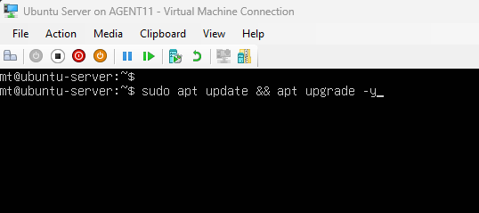
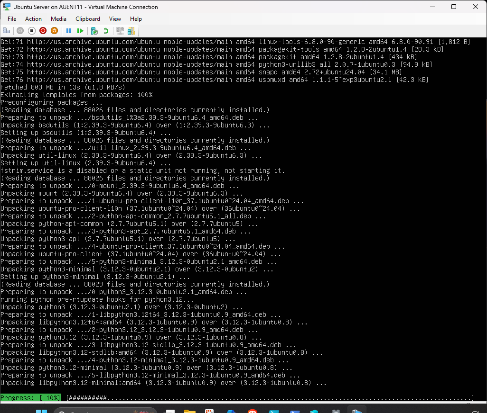
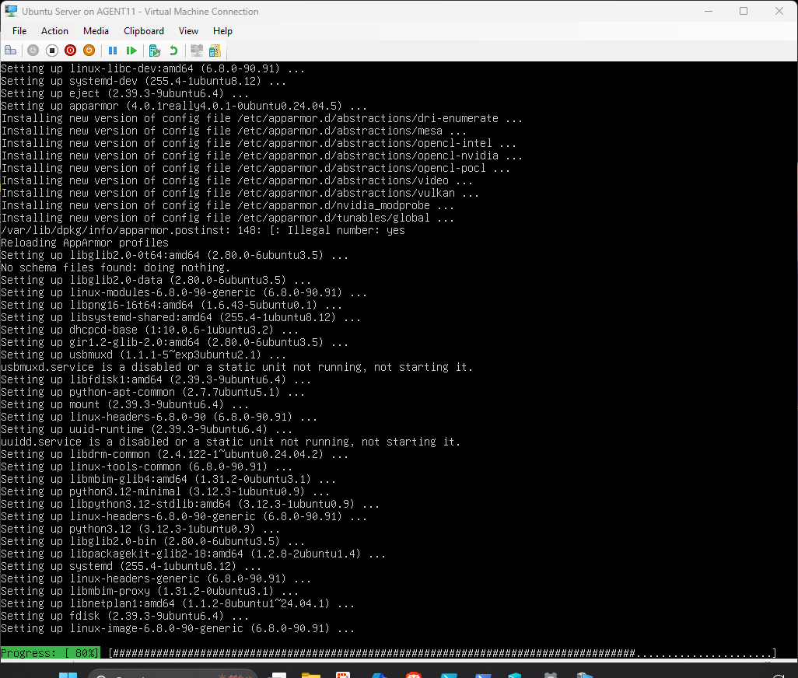
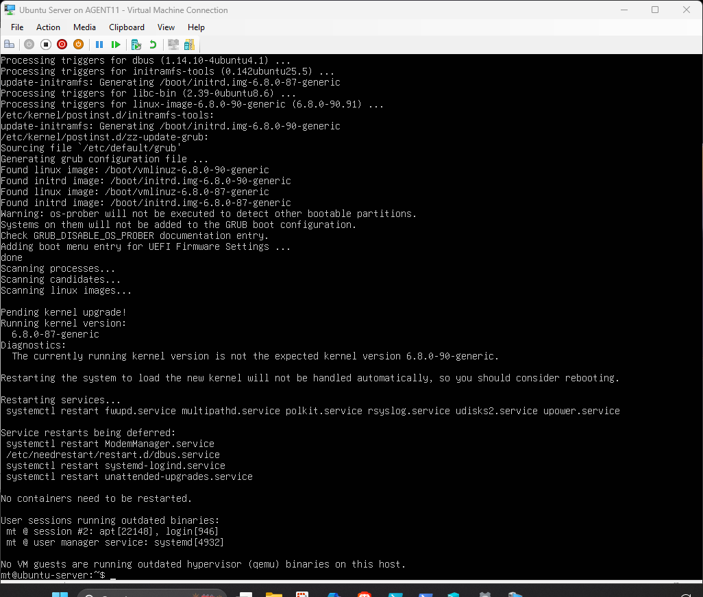
After a significant system upgrade, a sudo reboot is performed to initialize the newly installed Linux Kernel — ensuring the system isn't running an outdated or vulnerable kernel, and that all system services have been refreshed to utilize the latest patched libraries.
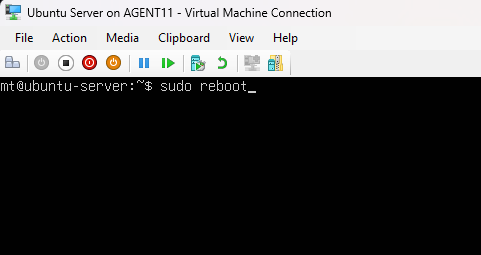
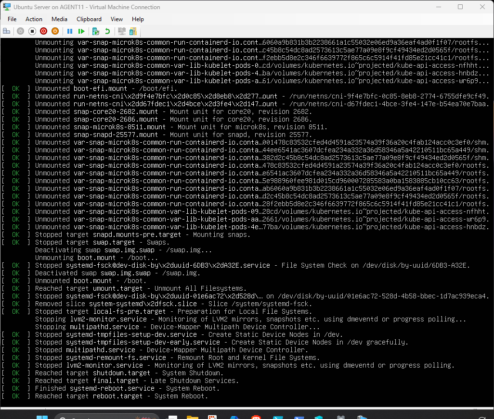
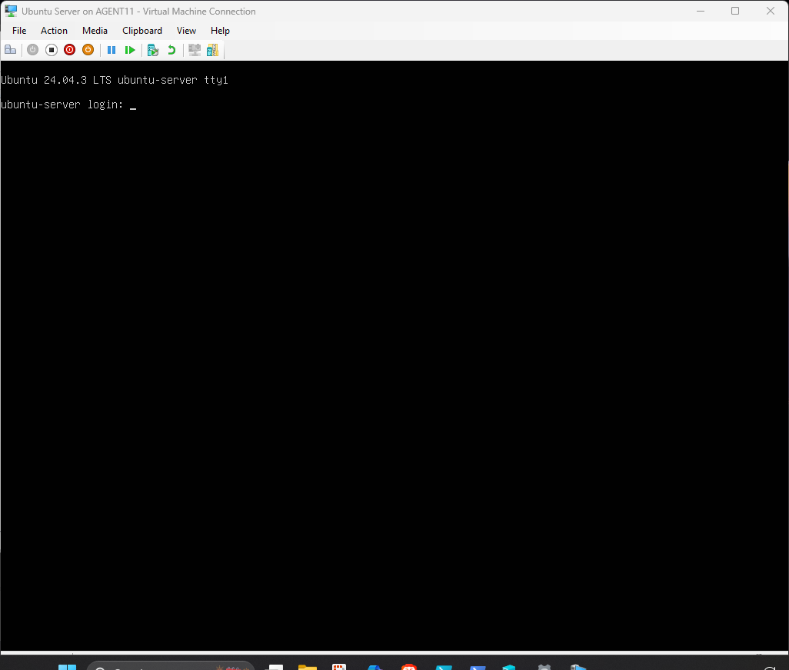
Phase 2 — Identity, Privilege Management & Access Control
1. Create a Non-Root Admin User
Never operate day-to-day as root.
sudo adduser sysadmin
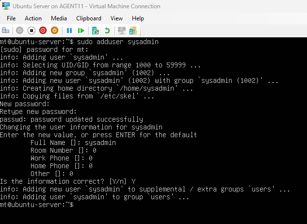
groups sysadmin
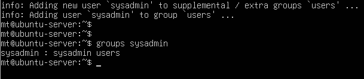
Running groups sysadmin confirms that the automated part of the adduser process works correctly.
- Primary Group: The user has their private group (
sysadmin). - Standard Access: The user was successfully added to the
usersgroup, the standard pool for non-administrative accounts on the system.
Creating a Non-Root Admin User is an action of Account Isolation. Instead of doing everything through your personal account or the root account, this creates a dedicated service account. This is a key security step — if one user becomes compromised, the other user accounts remain protected.
- Least privilege
- Auditability
- Industry best practice
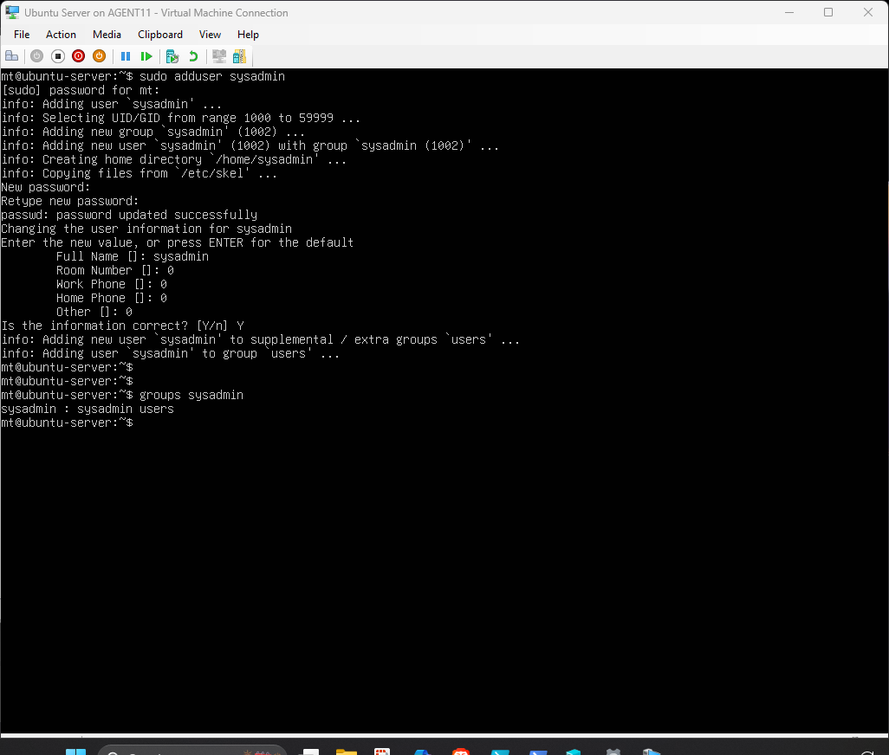
2. Harden SSH Access
Edit the SSH configuration:
sudo nano /etc/ssh/sshd_config
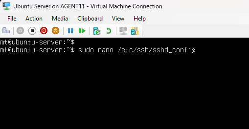
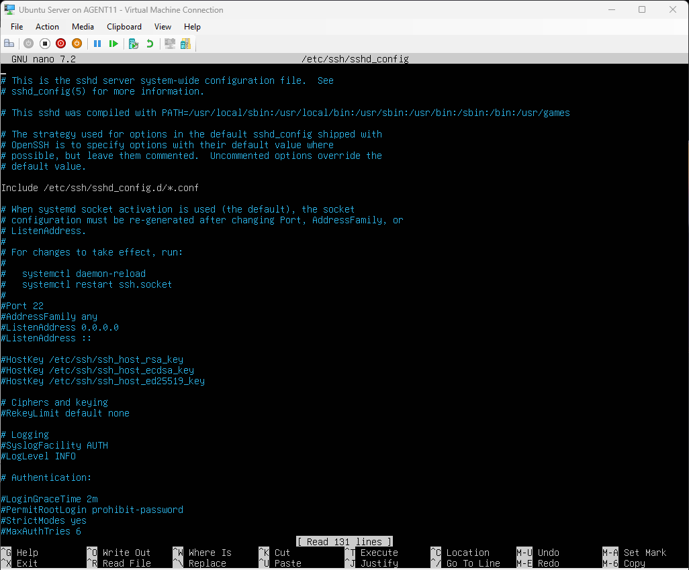
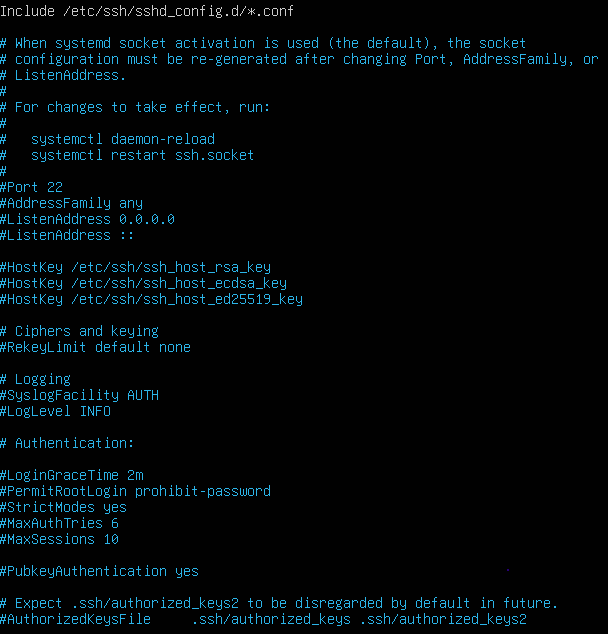
Recommended changes:
PermitRootLogin noPasswordAuthentication noPubKeyAuthentication yes
Verify and make necessary changes, then Ctrl + O to save and Ctrl + X to exit.
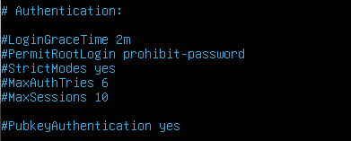
After making adjustments, restart the SSH service for the changes to take effect:
sudo systemctl restart sshsudo systemctl status ssh
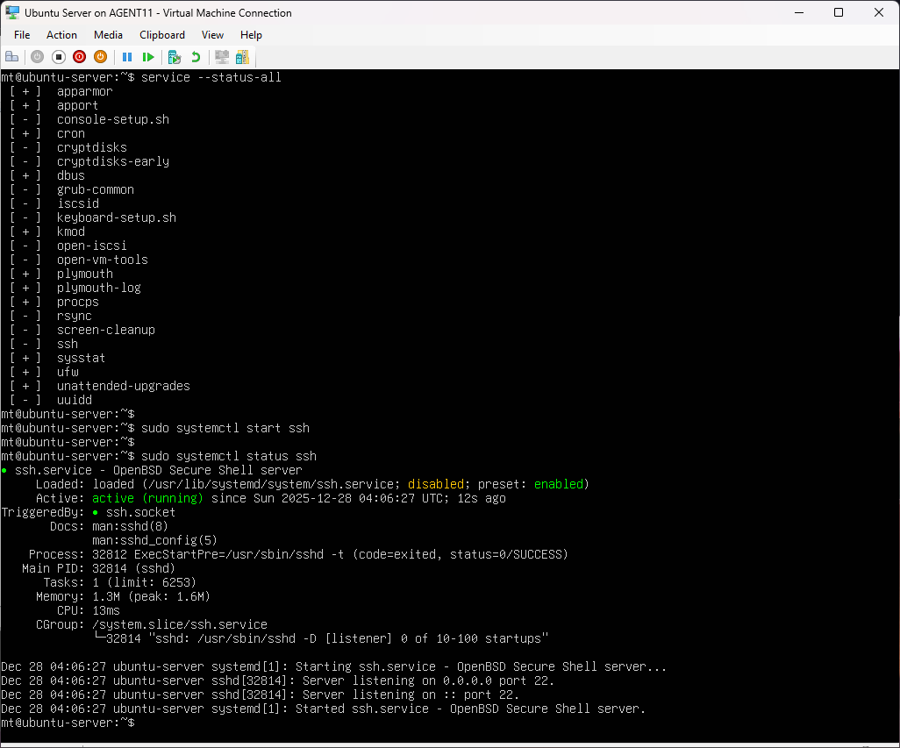
- Prevents brute-force attacks
- Enforces key-based authentication
Phase 3 — Networking & Host Identity
1. Verify Network Configuration (Netplan)
ip a confirms and verifies the IP configuration details for the system's network adapter. It's best practice to review these details to verify you have the expected settings for the given configuration.
ip route lists the default routes defined on the system — useful both for verification and in various troubleshooting scenarios.
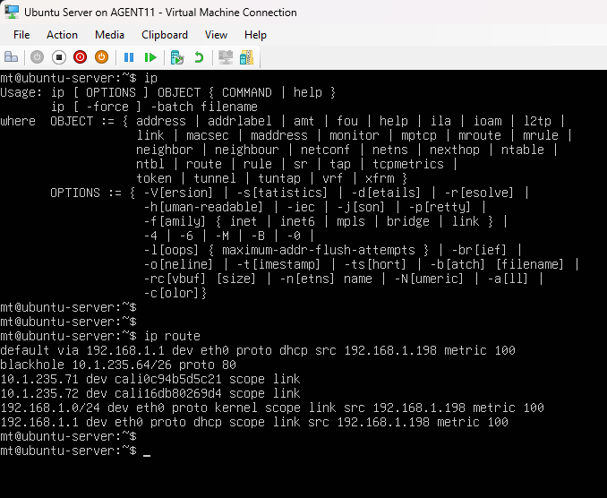
Running ls /etc/netplan/ to see what's available in the netplan directory. In this example, the output file is 50-cloud-init.yaml. Network configurations in Ubuntu are stored in YAML files — the "instruction manuals" that tell a Network Interface Card (NIC) how to establish an internet connection.
ls /etc/netplan/sudo nano /etc/netplan/*.yaml
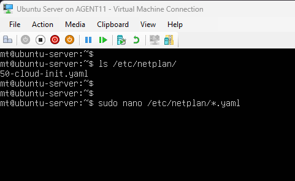
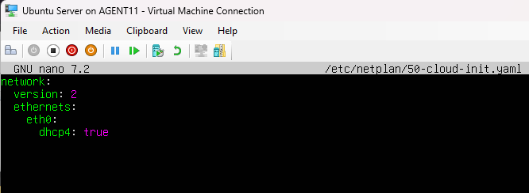
When editing network settings on a headless server, there is a high risk of accidentally locking yourself out. The sudo netplan try command applies new network settings temporarily — with a countdown timer. If you don't press Enter within that time, the server automatically rolls back to the old, working settings. Once confirmed, sudo netplan apply makes the changes permanent.
sudo netplan trysudo netplan apply
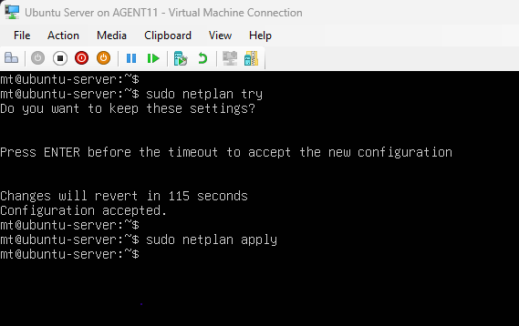
- Static IPs for servers
- Prevents accidental lockouts
In a headless server configuration, the network configuration file is the most critical file. Admins use Netplan to set a Static IP so the server's address never changes, and configure DNS to tell the server which resolver to use. This ensures consistent remote access and operational continuity.
2. Set Hostname & Local Name Resolution
After the initial system health check, it's time to set up a recognizable hostname that fits the system's intended purpose.
hostnamesudo hostnamectl set-hostname ubuntu-srv01sudo nano /etc/hosts
Add to /etc/hosts: 127.0.1.1 ubuntu-srv01
This maps the new hostname to the local loopback address, preventing DNS-lookup lag and ensuring local services can resolve the system's identity without external network dependencies.
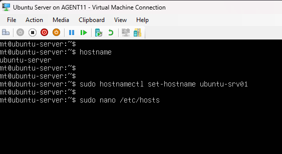
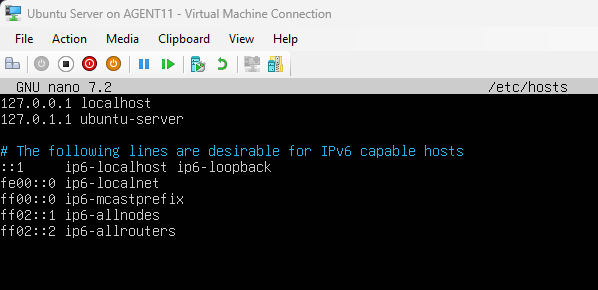
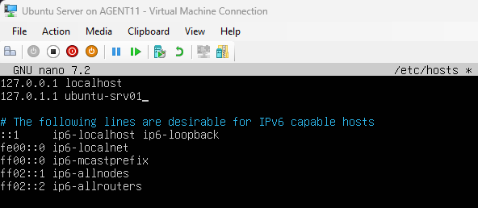
- Clean logs
- Predictable service identity
- Easier monitoring & automation
Phase 4 — Security Baseline
1. Configure the Firewall (UFW)
- Deny incoming traffic by default
- Allow outgoing traffic by default
- Allow OpenSSH
- Enable the UFW firewall
- List UFW firewall status
sudo ufw default deny incoming
sudo ufw default allow outgoing
sudo ufw allow OpenSSH
sudo ufw enable
sudo ufw status verbose
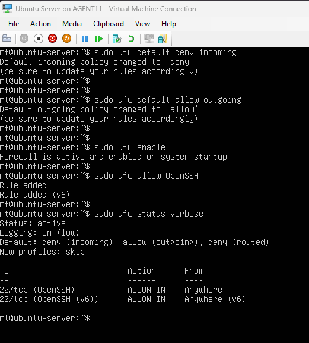
- Immediate attack surface reduction
- Zero-trust mindset
2. Enable Automatic Security Updates
sudo apt install unattended-upgrades -y
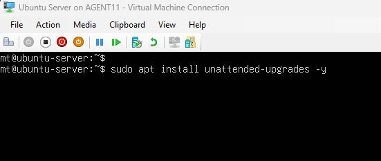
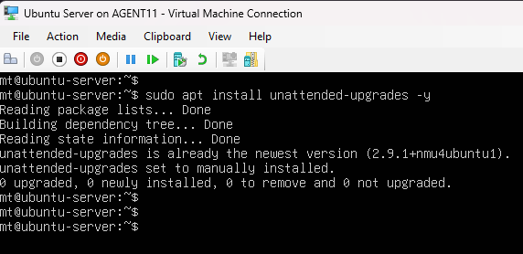
To minimize the attack surface and ensure 24/7 security compliance, the unattended-upgrades package implements Automated Patch Management. It enables the server to autonomously fetch and apply critical security updates from official Ubuntu repositories — ensuring the system remains resilient against emerging threats without requiring manual intervention.
sudo dpkg-reconfigure unattended-upgrades
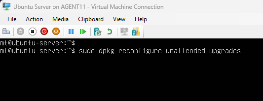
Select Yes when prompted:
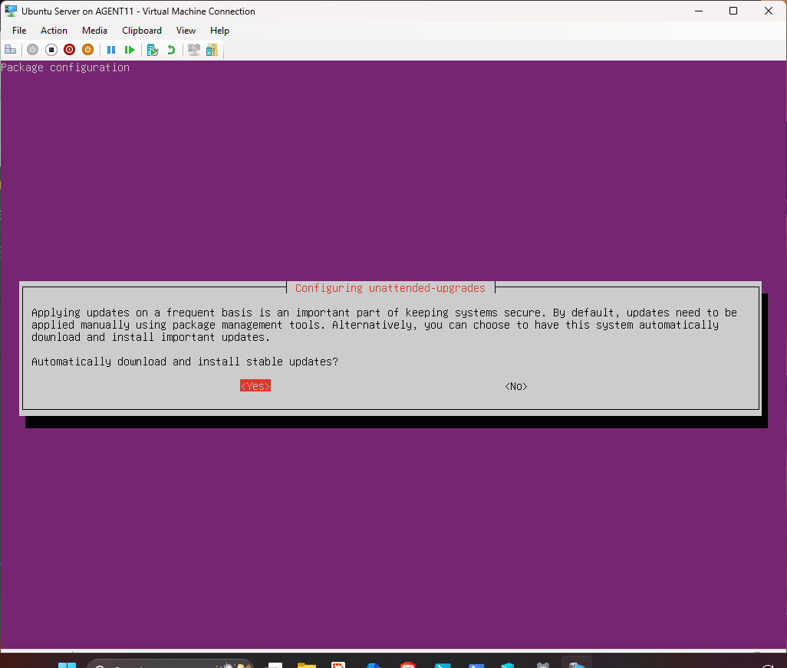
This ensures the server remains resilient against zero-day vulnerabilities by synchronizing with official repositories daily — reducing the need for manual intervention while maintaining system uptime and stability.
Phase 5 — Service & System Management
1. Install Core SysAdmin Tools
sudo apt install -y htop curl wget git net-tools fail2ban
htop— interactive process viewercurl— data transfer toolwget— file downloadergit— version controlnet-tools— legacy network utilitiesfail2ban— intrusion prevention service
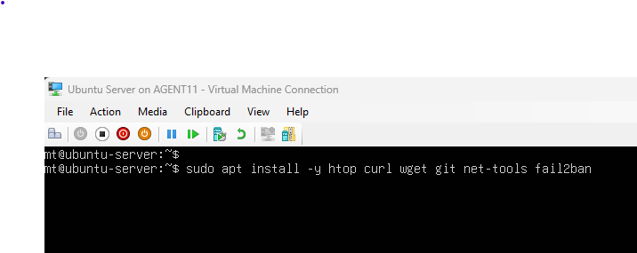
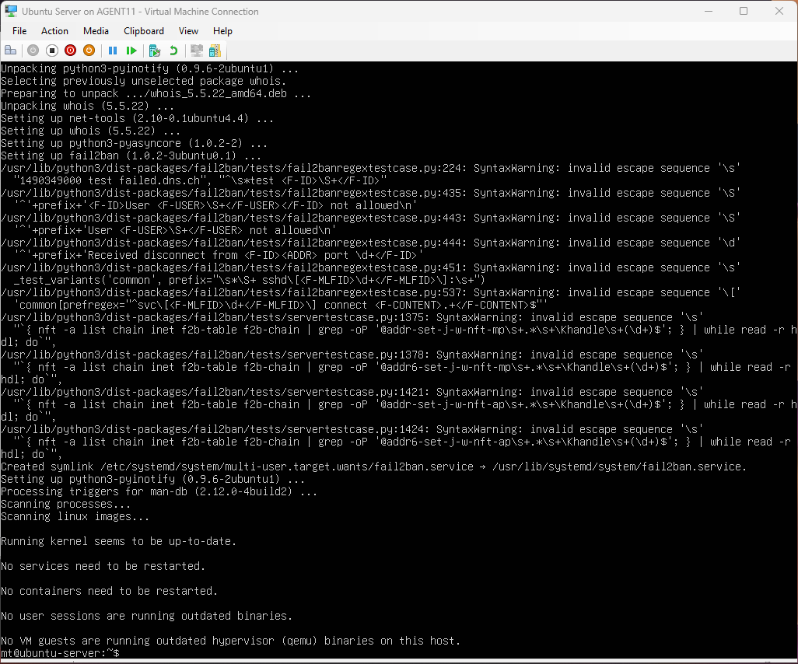
Fail2ban is a critical open-source intrusion prevention service designed to harden a server against brute-force attacks. By configuring "jails," it dynamically monitors SSH authentication logs and proactively bans malicious IP addresses — significantly reducing the server's attack surface.
Enabling Fail2ban
sudo systemctl enable fail2ban --now
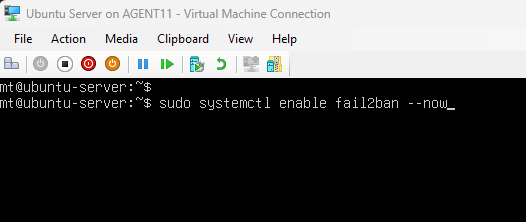
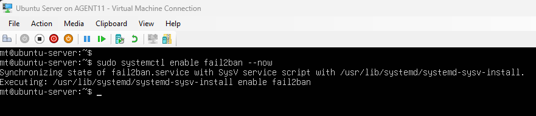
systemctl list-units --type=service --state=running
This is the terminal equivalent of opening the "Processes" tab in Windows Task Manager or Activity Monitor on a Mac.
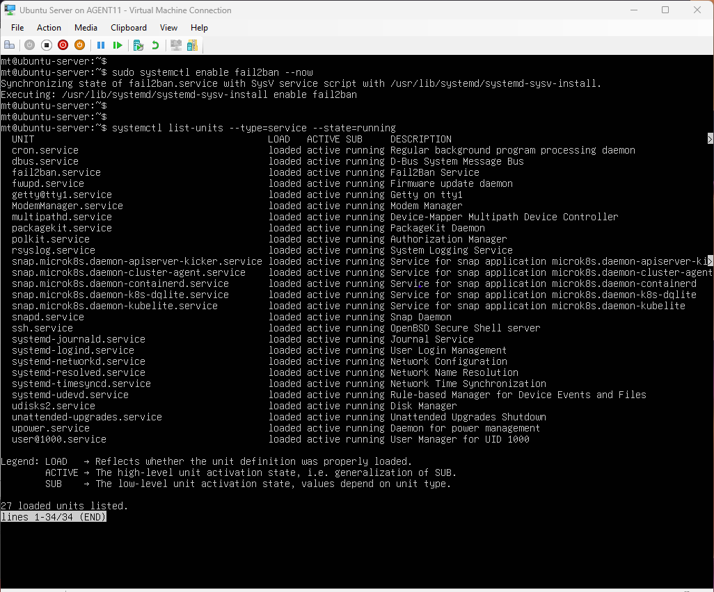
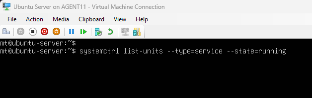
Phase 6 — Logging, Monitoring & Maintenance
1. Log Inspection
journalctl -p 3 -xb
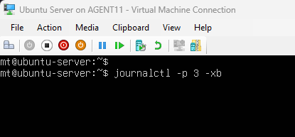
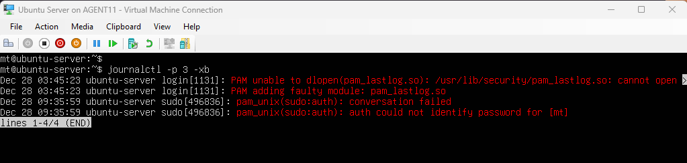
Using journalctl -p 3 -xb as a primary diagnostic tool runs a high-priority log inspection. By filtering for Priority 3 (Error-level) events within the current boot descriptor, it bypasses non-critical system telemetry and immediately isolates service failures or kernel exceptions that could impact system stability.
2. Check Auth Logs
sudo tail -f /var/log/auth.log
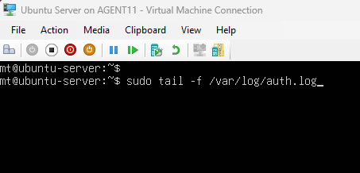
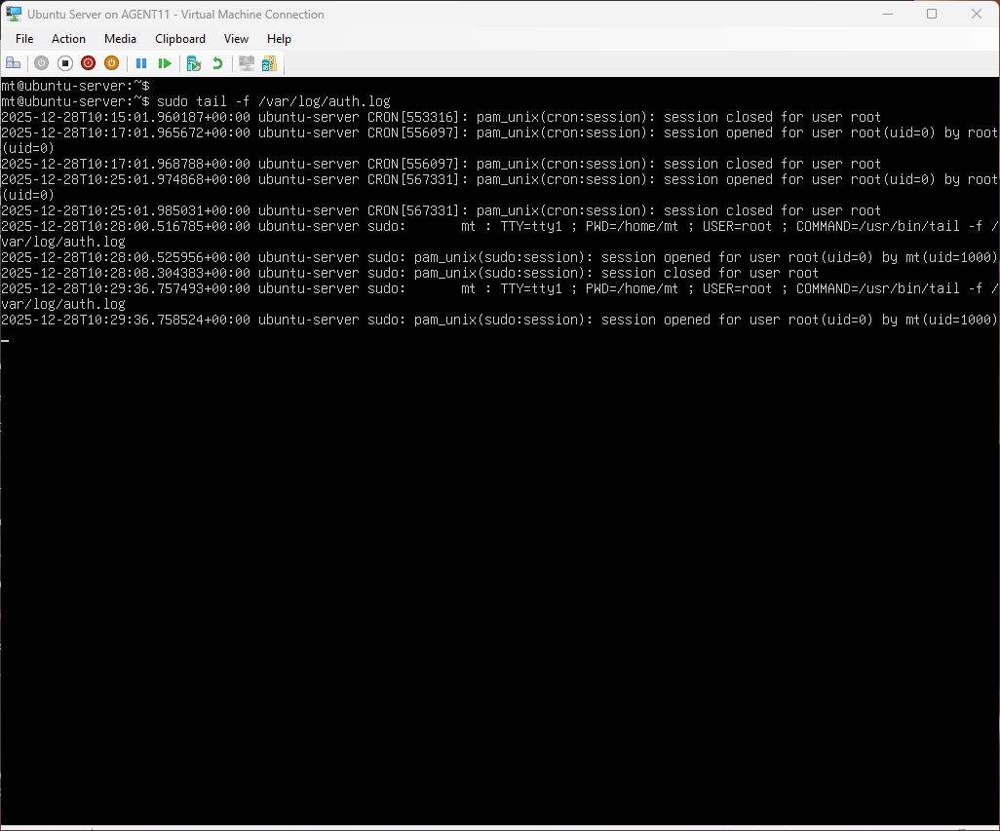
Using tail -f on the authentication logs (auth.log) establishes a Live Security Feed — allowing real-time observation of user sessions and authentication attempts. This ensures total visibility into both system stability and security integrity.
- Early intrusion detection
- Debugging misconfigurations
3. Backup Awareness (Often Ignored)
Even if you don't implement backups yet, it's critical to know what to back up:
ls /etcls /var
In establishing a robust disaster recovery plan, the /etc and /var directories are the priority. Backing up /etc preserves the System State — capturing all custom configurations, security policies, and network definitions. Backing up /var ensures preservation of Operational Data, including critical security logs and application databases. Together, these backups allow for a rapid bare-metal recovery, ensuring the system can be restored to its exact functional state in the event of hardware failure or data corruption.